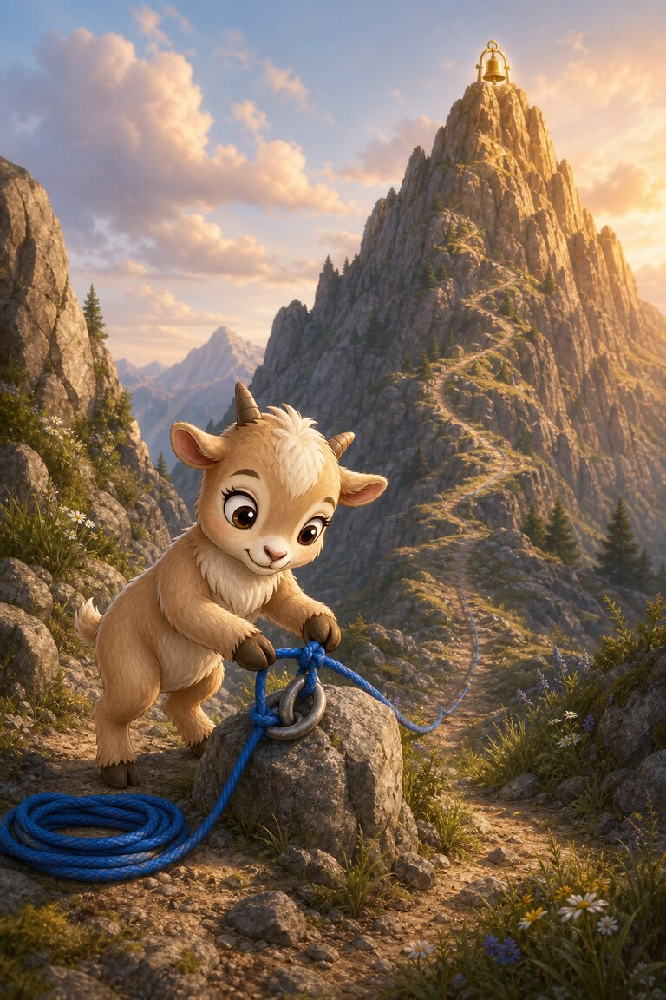
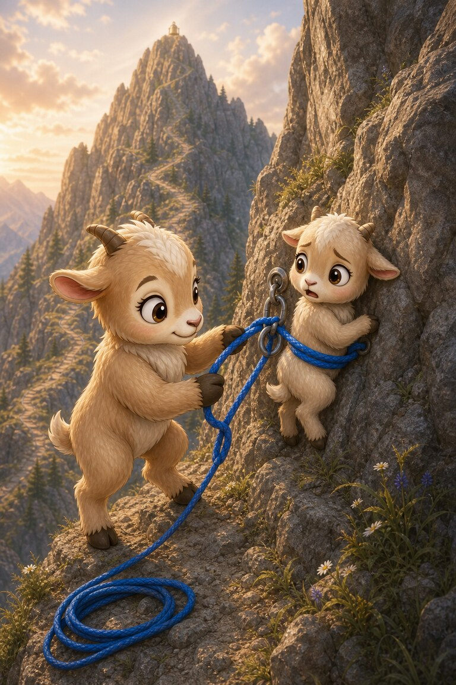
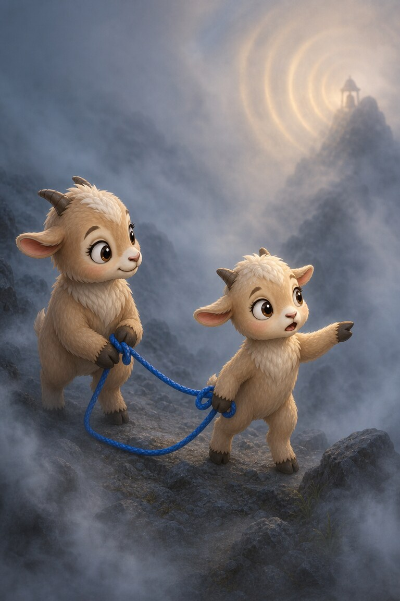
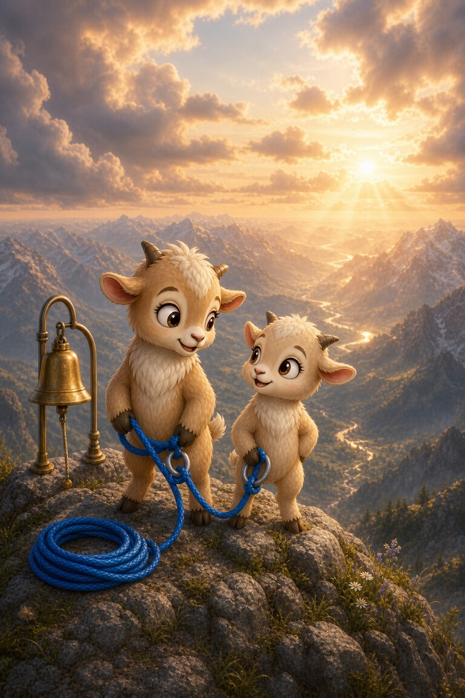

Page 1 of 4
Pita-Pan ties his blue rope and hopes to reach the summit before the evening light turns gold. Today he wants to prove he can climb alone.
A four-page mountain adventure about a frightened climber, a blue rope and a summit reached together.
5 printed pages · 0.8 MB · A4 or US Letter. Download PDF · Open PDF to printOpens in a new tab. Use the PDF viewer's Print control. To use less ink, read online and choose only the questions on page 5 in Print.

Pita-Pan ties his blue rope and hopes to reach the summit before the evening light turns gold. Today he wants to prove he can climb alone.

On a narrow ledge, he finds a younger goat frozen with fear. The quickest path continues upward, but Pita anchors the rope beside her.

Inside a cold cloud, they cannot see the trail. Pita asks his new partner to listen for the bell at the peak, and she leads by sound.

They reach the summit as the valley glows below. Pita did not prove he could climb alone; he discovered how far two careful climbers can go.
To help a frightened younger goat.
She listened for the summit bell.
SnackPack Sentences & Spelling has many more short reads like this one, plus the Reading Trail, word packs and literacy games.
Related read-together bookOcto-Pop’s Coral Reef
Explore another book · read togetherPanda-Cake Discovers Her ABCs
Know a family or class who would enjoy it?